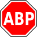
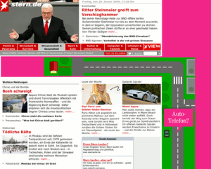
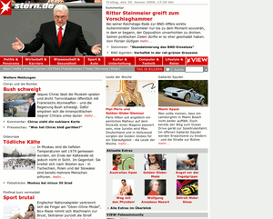

Adblock
Archivierte Anleitung
Dieser Artikel wurde archiviert, da er - oder Teile daraus - nur noch unter einer älteren Ubuntu-Version nutzbar ist. Diese Anleitung wird vom Wiki-Team weder auf Richtigkeit überprüft noch anderweitig gepflegt. Zusätzlich wurde der Artikel für weitere Änderungen gesperrt.
Anmerkung: Ein überarbeiteter Artikel ist unter Adblock zu finden.
Zum Verständnis dieses Artikels sind folgende Seiten hilfreich:
 Mit der Firefox-Erweiterung Adblock bzw. seinem Nachfolger Adblock Plus kann man verhindern, dass in Internetseiten eingebundene Werbung angezeigt wird. Neben der Tatsache, dass man die Werbung nicht mehr sieht, hat das Blockieren von Werbeeinblendungen den angenehmen Nebeneffekt, dass Webseiten schneller laden, weniger Transfer-Volumen benötigen und somit den Geldbeutel von Internetsurfern ohne eine Flatrate schonen.
Seit mehreren Jahren steht für Mozilla bzw. Firefox die Erweiterung Adblock zur Verfügung, deren Entwicklung jedoch vor geraumer Zeit stockte. Daher wird seit Anfang 2006 äußerst aktiv die neue Version Adblock Plus entwickelt, das gegenüber dem älteren Adblock-Derivat deutlich verbessert und daher zu bevorzugen ist.
Hinweis:
Im weiteren Artikel wird ausschließlich von Adblock gesprochen – es ist aber immer von Adblock Plus die Rede.
Vergleich mit und ohne Adblock¶
Wie eine Internetseite mit und ohne Werbeblocker aussieht, kann man dem folgenden Beispiel entnehmen:
| Unterschied einer Webseite mit und ohne Adblock | |
| Ohne Adblock | Mit Adblock |
|  |  |
Installieren¶
Man kann Adblock über zwei verschiedene Wege installieren: Entweder man nutzt die Installations- und Updatefunktion des Firefox selbst oder man nutzt die Paketverwaltung des eigenen Ubuntusystems. Für welche Inbetriebnahme man sich auch entscheidet: Nach der Installation und einem Neustart des Firefox steht die Erweiterung bereit und kann, wie unten beschrieben, genutzt werden.
Manuelle Installation über den Erweiterungsmanager von Firefox:
Vorteil: Man nutzt immer sehr zeitnah die jeweils aktuelle Version
Nachteile: Man muss sich selbst über den Erweiterungsmanager von Firefox um auflaufende Aktualisierungen kümmern. Außerdem werden Erweiterungen, die man selbst über FireFox installiert, nur für den (eigenen) Benutzer verfügbar.
Installation über die Paketquellen:
Vorteile: Quasi das Rundum-Sorglos-Paket, da man sich, wie sonst auch, nicht um Aktualisierungen kümmern muss, da diese vom System installiert werden. Des Weiteren werden Erweiterungen aus den Paketquellen für alle Benutzer des Systems installiert.
Nachteil: Man hat eventuell nicht immer schnellstmöglich die jeweils aktuelle Version, um diese mit den neuesten Firefoxversionen testen zu können
Manuelle Installation¶
Die manuelle Installation von Erweiterungen im Browser Firefox wird ausführlich im Artikel Firefox/Erweiterungen beschrieben.
Installation über Paketquellen¶
Adblock ist auch über die Paketverwaltung von Ubuntu verfügbar. Dazu installiert man sich das folgende sogenannte „Dummy-Paket“:
adblock-plus (universe)
 mit apturl
mit apturl
Paketliste zum Kopieren:
sudo apt-get install adblock-plus
sudo aptitude install adblock-plus
Dieses „Dummy-Paket“ installiert wiederum das Paket xul-ext-adblock-plus, welches die Firefox-Erweiterung Adblock Plus enthält. „Dummy-Paket“ steht für ein Paket, das auf ein anderes Paket verweist. Man nutzt dies, da Anwender in diesem Falle nach dem kurzen Namen adblock suchen werden, statt den vollständigen Namen xul-ext-adblock-plus einzugeben.
Werbung blocken¶
Für jede Seite lässt sich eine "Liste der blockierbaren Elemente" anzeigen, die durch Rechtsklick bei Bedarf ebenfalls geblockt oder auch in die "Ausnahmeliste" aufgenommen werden können. Zusätzlich können aber auch "individuelle Regeln" gebildet werden, indem durch Rechtsklick auf einen Link bzw. eine Grafik diese über den entsprechenden Menüpunkt zukünftig geblockt werden kann. Eine Einführung in die manuelle Erstellung von Filtern findet sich auf der Adblock Plus-Homepage  . Ausführliche Informationen zu Adblock finden sich im Abschnitt Links.
. Ausführliche Informationen zu Adblock finden sich im Abschnitt Links.
Filterlisten nutzen¶
Startet man Adblock das erste Mal, startet ein Assistent mit dessen Hilfe man bestehende Filterlisten auswählen kann. Diese können bei Bedarf über "Filter -> Filterabonnement hinzufügen" aktiviert werden. Diese Listen aktualisiert Adblock automatisch über das Internet, so dass neue Werbe-URLs schnell gefiltert werden können.
Man sollte es in jedem Falle vorziehen, eine vorgefertigte Filterliste zu nutzen. Diese werden von der Gemeinschaft oder eizelnen Personen gepflegt und sind damit stets aktuell. Des Weiteren gibt es einige Besonderheiten beim Erstellen der Filter zu beachten, da es sonst passieren kann, dass die Filter Adblock selbst ausbremsen.
Empfehlenswerte Filterlisten¶
Es gibt, begibt man sich auf die Suche, hunderte, wenn nicht gar tausende verschiedene Filterlisten für Adblock. Für deutsche bzw deutschsprachige Anwender lassen sich vier sehr empfehlenswerte Listen aussprechen. So findet man im deutschen Firefox-Forum jeweils von den dortigen Nutzern MonztA (EasyList-Filterliste) und Dr. Evil sowie der Firefox-Community gepflegte Filterlisten, welche vor allem für das deutschsprachige Internet von Vorteil sind.
Achtung!
Man sollte keine „konkurrierenden“ Listen einsetzen, da diese Firefox extrem ausbremsen können. Im unteren Beispiel sollte man sich also entweder für die Easylist (MonztA) oder für Dr. Evils Liste entscheiden, da diese zum Teil die gleichen Filter nutzen. Die beiden anderen (EasyPrivacy und MonztAs Socialfilter) können dagegen mit anderen kombiniert werden.
| Empfehlenswerte Filterlisten für deutschsprachige Nutzer | |||
| Name | Filterliste | Bemerkung | Forenthread |
| EasyList-Filterliste (MonztA) | https://easylist-downloads.adblockplus.org/easylistgermany+easylist.txt | Blockt nahezu jegliche Form von Werbung | Forenthread zur Pflege der Liste |
| EasyPrivacy | https://easylist-downloads.adblockplus.org/easyprivacy.txt | Blockt Trackingskripts, Zählpixel, Google-Analytics usw. | easylist.adblockplus.org |
| MonztAs Social-Filter | http://monzta.maltekraus.de/adblock_social.txt | Blockt Social-Media-Buttons (Facebook, Twitter und Co) | Forenthread zur Pflege der Liste. |
| Dr. Evil | https://adblock.maltekraus.de/adblock.txt | Es wird nur „nervige“ Werbung (Flash, Animationen) geblockt | Forenthread zur Pflege der Liste |
Es gibt daneben auch noch diverse andere Filter-Abonnements .
Eigene Filterliste erstellen¶
Man kann sich eine eigene Filterliste erstellen. Dies kann verschiedene Gründe haben. Vielleicht gibt es Seiten, zu denen andere keinen Zugang haben (Intranet) oder man möchte diese in einem öffentlichen Forum nicht nennen.
Um eine eigene Filterliste erstellen zu können, muss man zuerst eigene Filter erstellen (siehe Werbung blocken). Dazu langt es schon aus, nur einen selbsterstellten Filter zu haben. Möchte man daraus nun eine eigene Filterliste erstellen, muss man die Adblock-Einstellungen öffnen und in der Menüleiste zu "Filter -> Eigene Filter exportieren" navigieren.
Man wird aufgefordert, einen Namen für die zu exportierende Textdatei zu wählen und diese abzuspeichern. Man sollte diese eben erstellte Textdatei mit einem Editor [1] seiner Wahl öffnen und einen Namen, eventuelle Hinweise und Kommentare sowie ein Ablaufdatum angeben.
Diesen Hinweisen, Kommentaren, dem Namen und dem Ablaufdatum müssen ein Ausrufezeichen (!) und ein Leerzeichen voranstehen, so dass eine Beispielfilterliste wie folgt aussehen könnte:
[Adblock Plus 1.1] ! Checksum: oGrtZ3YOoPL474TgJFP5ZQ ! Name der Liste ! Last modified: 13 Nov 2010 09:00 UTC ! Expires: 5 days (update frequency) |http://api.flattr.com/button/* heise.de##.blogbottom
Nachfolgende Tabelle beschreibt die einzelnen Zeilen eines Kopfes einer Filterliste:
| Erklärungen des Kopfes einer Filterliste | |
| Detail | Erklärung |
[Adblock Plus 1.1] | Die erste Zeile [Adblock Plus 1.1] wird von Adblock selbst erstellt und gibt ab, welche Adblock-Version mindestens vorliegen muss, um die beinhaltende Filterliste nutzen zu können (siehe Adblock-FAQ ) |
! Checksum: oGrtZ3YOoPL474TgJFP5ZQ | Prüfsumme (Checksum) Weitere Hinweise zur Prüfsumme in Adblock findet man in der Adblock-FAQ |
! Name der Liste | Dieser kann frei gewählt werden |
! Last modified: 13 Nov 2010 09:00 UTC | Letzte Modifizierung (manuell zu pflegen). |
! Hier steht ein Hinweis oder Kommentar | Es können auch andere Hinweise/Kommentare angegeben werden. Diese sind natürlich optional. Wichtig ist nur, dass ihnen ein Ausrufezeichen (!) gefolgt von einem Leerzeichen voranstehen |
! Expires: 5 days (update frequency) | Ablaufdatum (in diesem Fall 5 Tage). Adblock wird nach der eingestellten Zeit erneut schauen, ob es ein Update der Liste gibt. Weitere Hinweise zum Ablaufdatum in Adblock findet man in der Adblock-FAQ |
|http://api.flattr.com/button/* | Die eigentlichen beiden Filter beginnen erst unterhalb des „Ausrufezeichen-Abschnittes“. In diesem Beispiel werden alle Flattr-Icons geblockt |
heise.de##.blogbottom | Es wird der Abschnitt namens "blogbottom" auf der heise.de-Seite versteckt (nicht geblockt) |
Hat man nun einen Namen, eventuelle Hinweise und Kommentare sowie ein Ablaufdatum eingegeben, muss man, da sich die Prüfsumme (Checksum) durch die Editierungen geändert hat, eine neue erstellen. Dazu bedient man sich am besten dem Perl-Skript von Wladimir Palant, dem Betreuer von Adblock, welches hier  heruntergeladen werden kann. Man speichert es sich am besten im Homeverzeichnis ab und ruft es dann über den Befehl im Terminal [2]
heruntergeladen werden kann. Man speichert es sich am besten im Homeverzeichnis ab und ruft es dann über den Befehl im Terminal [2]
perl addChecksum.pl name_der_eigenen_filterliste.txt
auf (der Name der eigenen abgespeicherten Filterliste muss abgeändert werden). Abschließend kann man dann diese Textdatei z. B. per FTP auf einen Webspace seiner Wahl laden und die URL der hochgeladenen Filterliste wiederum in Adblock über "Filter -> Filterabonnement hinzufügen" aufnehmen.
Kritik¶
Werbeblocker aller Art lösen zum Teil Diskussion darüber aus, ob die Blockierung von Werbung dazu führen könnte, dass werbefinanzierte Angebote stark zurückgehen (Beispiel  ). Auch gibt es einige Websitebetreiber, die dazu übergegangen sind, die Nutzung von AdBlock zu erkennen und Gegenmaßnahmen zu ergreifen. So blenden einige Websites Warnmeldungen ein, die auf das Konzept der Werbefinanzierung hinweisen und um Fairness bitten. Andere Websites loggen Adblock-Nutzer zwangsweise aus, selbst wenn diese die Seite in ihre Whitelist eingetragen haben. Eine Abhilfe ist bisher nicht bekannt, sofern AdBlock nicht komplett entfernt werden soll.
). Auch gibt es einige Websitebetreiber, die dazu übergegangen sind, die Nutzung von AdBlock zu erkennen und Gegenmaßnahmen zu ergreifen. So blenden einige Websites Warnmeldungen ein, die auf das Konzept der Werbefinanzierung hinweisen und um Fairness bitten. Andere Websites loggen Adblock-Nutzer zwangsweise aus, selbst wenn diese die Seite in ihre Whitelist eingetragen haben. Eine Abhilfe ist bisher nicht bekannt, sofern AdBlock nicht komplett entfernt werden soll.
- Erstellt mit Inyoka
-
 2004 – 2017 ubuntuusers.de • Einige Rechte vorbehalten
2004 – 2017 ubuntuusers.de • Einige Rechte vorbehalten
Lizenz • Kontakt • Datenschutz • Impressum • Serverstatus -
Serverhousing gespendet von